Весь лендинг — один кусок кода. Его вставляют в блок T123 «HTML-код» на новой странице Тильды и публикуют. Девять шагов, минут десять.
Нажмите кнопку — весь код окажется в буфере обмена.
Р РѕР — такой текст не копируйте.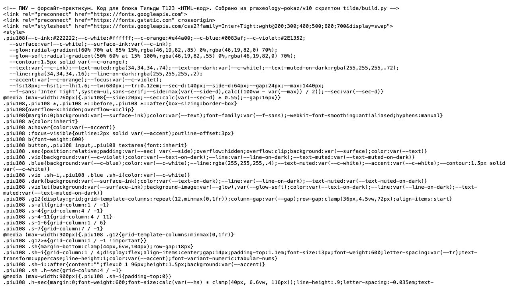
Мои сайты → сайт 108.community → Создать новую страницу, в выборе шаблона — «Пустая страница».
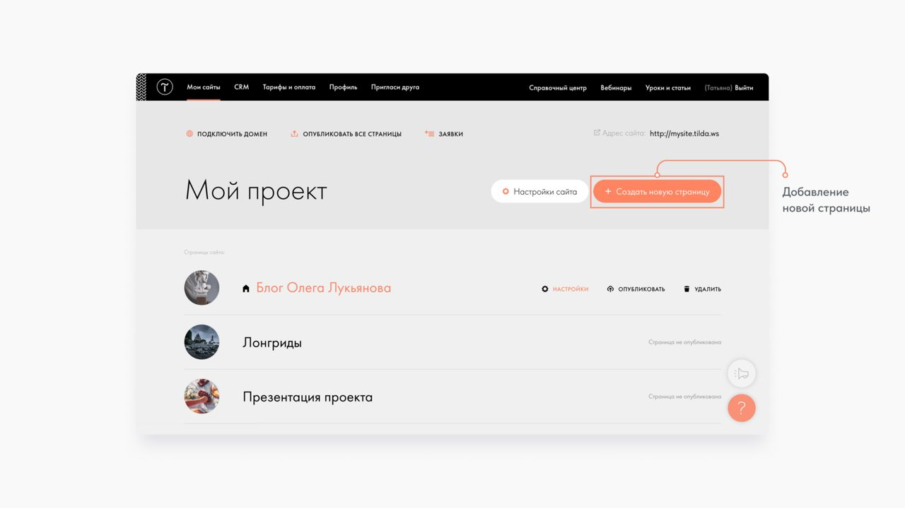
На пустой странице откройте библиотеку блоков: Все блоки → Другое → T123 HTML-код.
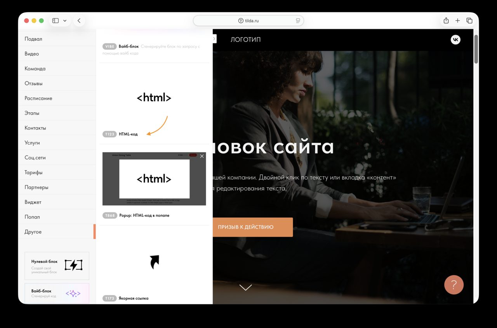
Наведите на блок и нажмите «Контент» слева сверху.
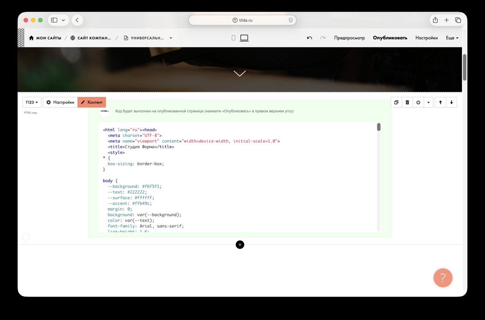
Щёлкните в поле, удалите пример (Cmd+A, Delete), вставьте код (Cmd+V) и нажмите «Сохранить и закрыть».
В редакторе блок так и останется кодом — это нормально: Тильда запускает HTML-код только на опубликованной странице, в предпросмотре его тоже не видно.
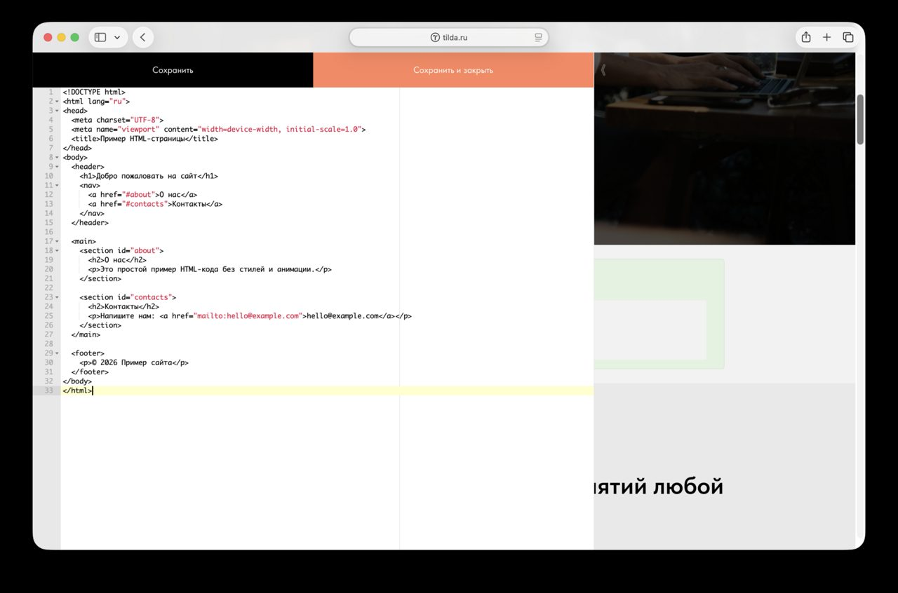
Настройки (вверху справа) → Главное
Картинку и текст для превью в Телеграме задайте там же, во вкладке «Соцсети».
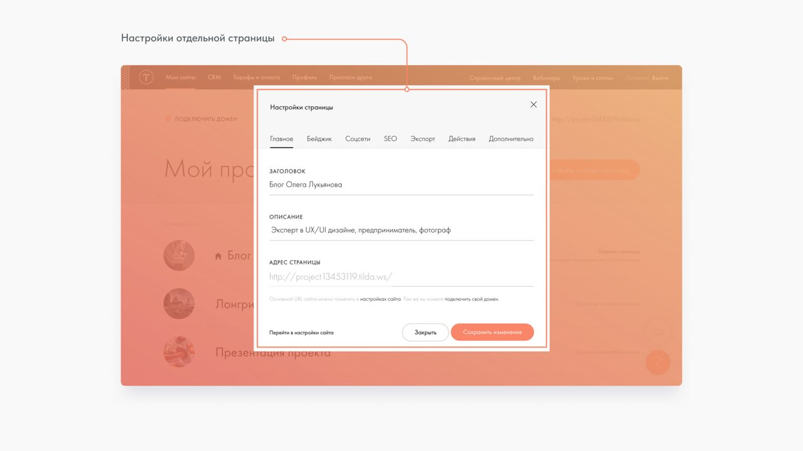
Если у сайта 108.community есть общие шапка или подвал, на этой странице они не нужны: Настройки → Дополнительно → отметьте «Не использовать шапку на этой странице» и «Не использовать подвал на этой странице» → «Сохранить изменения».
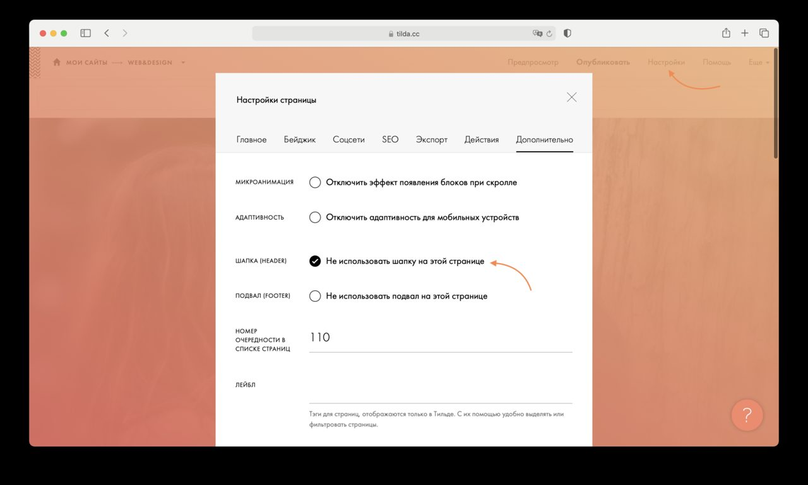
Нажмите «Опубликовать» вверху, затем «Открыть страницу».
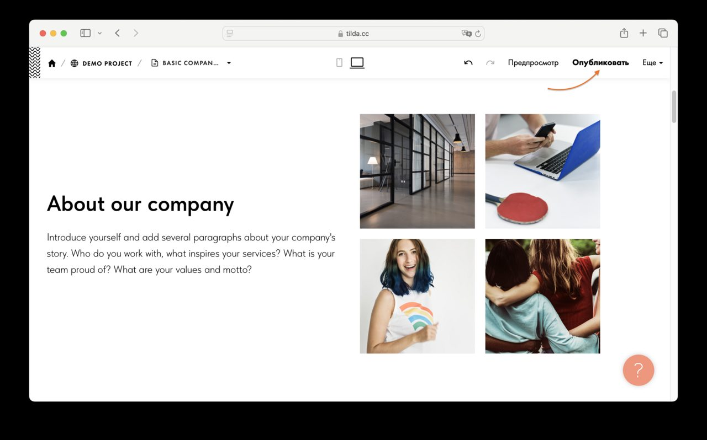
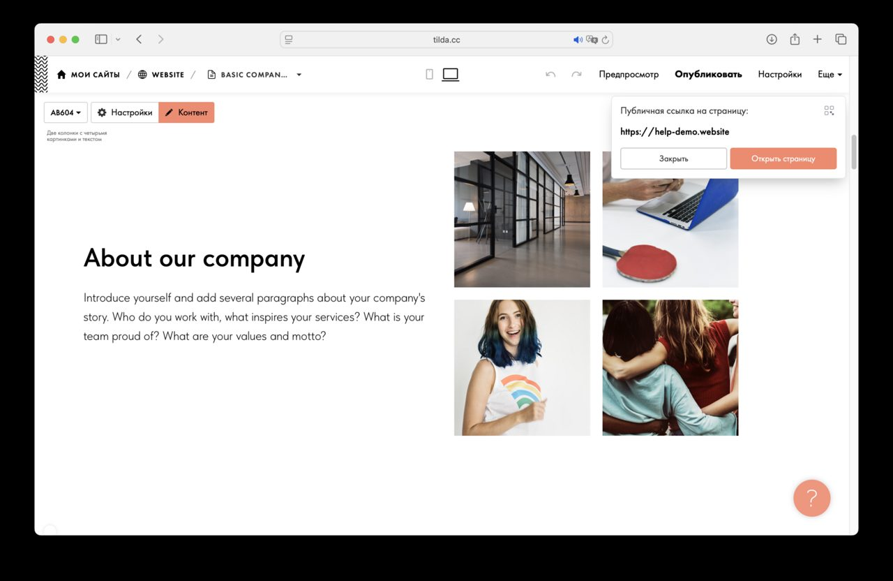
Если вместо страницы виден код или поехала вёрстка — обновите страницу (Cmd+Shift+R): браузер мог запомнить старую версию.
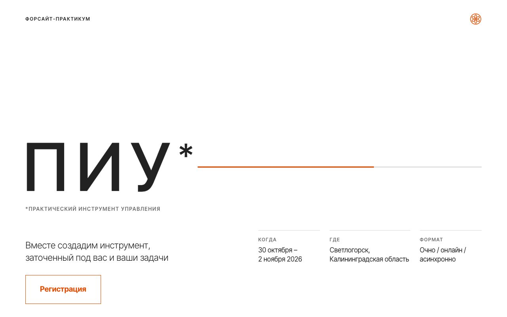
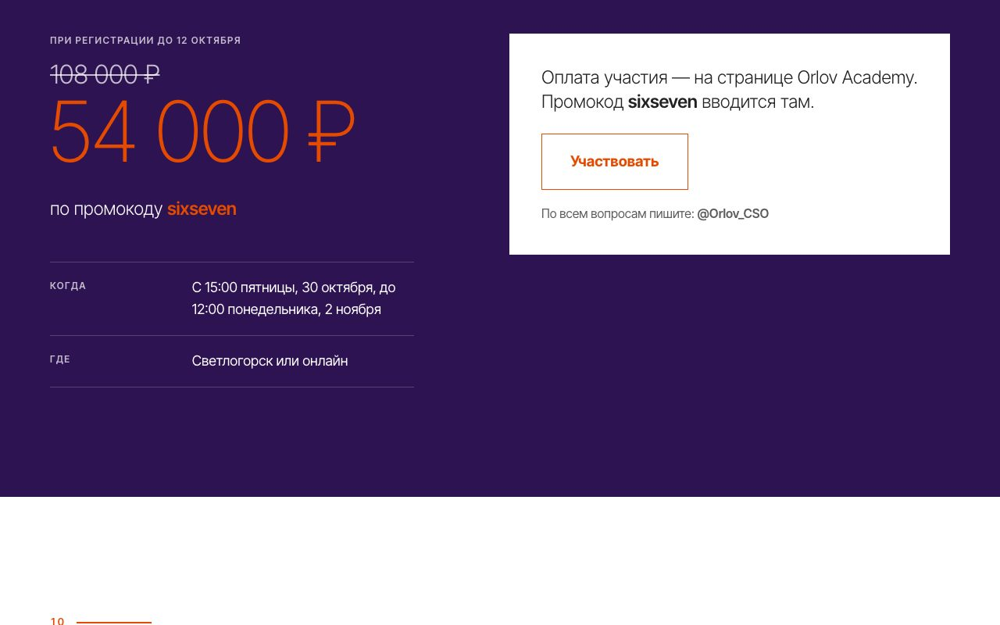
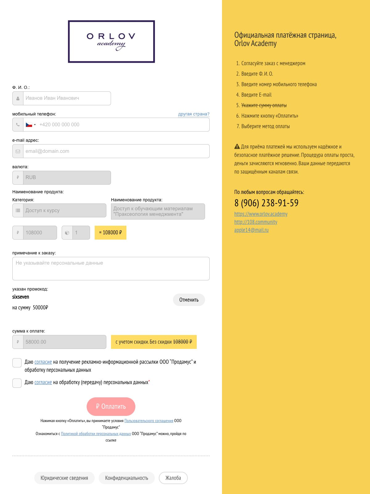
.piu108 и не трогают другие страницы и блоки сайта.v10/index.html → python3 tilda/build.py в папке pokaz → заново шаги 1, 4, 5 и 8.